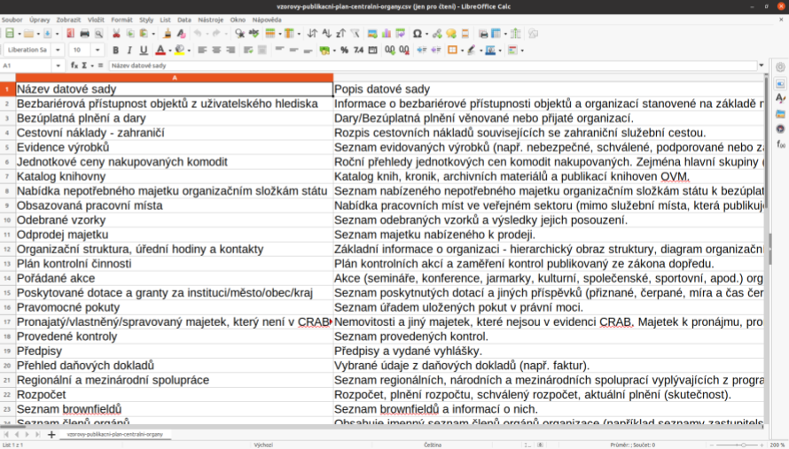

Identifikace datových sad pro publikaci jako OD
V tomto modulu si postupně ukážeme několik přístupů, jak v
organizaci identifikovat datové sady relevantní z pohledu
otevírání dat.
Cílem je zveřejnit maximum
veřejných údajů a v případě neveřejných dat realizovat
publikaci v podobě souhrnných statistik.
Výhled: co by se mělo dále dít s identifikovanými sadami?
- Identifikované datové sady by měly být následně analyzovány z
hlediska přínosů a rizik.
- Poté by vybrané sady měly být
zařazeny do publikačního plánu a v souladu s ním
zveřejněny v podobě otevřených dat.
Spolupráce Koordinátora a Kurátorů – východiska I.
Koordinátor otevírání dat
- nemusí znát věcný obsah jednotlivých datových
sad,
- (…a proto) není často schopen
kvalifikovaně rozhodnout, jaké datové sady by měly být zahrnuty do
publikačního plánu.
Spolupráce Koordinátora a Kurátorů – východiska II.
- Věcnou znalost a odpovědnost za datové sady nesou Kurátoři
dat.
- Kurátoři dat mohou
požádat o spolupráci IT specialisty, případně
další role v organizaci, které “mají k datům blízko” (např.
analytici).
Postup identifikace datových sad – krok I
Optimální postup se opírá o datový audit organizace.
- Jeho výstup je součástí informační
koncepce organizace.
- Po jeho provedení je zřejmé:
- jaká data organizace spravuje,
- jaký je jejich význam,
- kde jsou uložena,
- jaké jsou jejich jejich vzájemné vztahy,
- jakým způsobem jsou sdílena mezi informačními systémy,
- …
Postup identifikace datových sad – krok I (pokračování)
- Na datový audit naváže analýza charakteru dat z hlediska toho, zda
jsou veřejné či nikoliv (zejm. s ohledem na zákon o svobodném přístupu k
informacím) a které jsou určeny ke sdílení.
Postup identifikace datových sad – krok II
Návrh datových sad vznikne na základě výstupů
datového auditu.
Doplňkové způsoby návrhu datových sad
pro publikaci:
- využití vzorových
publikačních plánů – ty jsou k dispozici pro různé
typy organizací,
- oslovení vhodné skupiny zaměstnanců
Koordinátorem otevírání dat, aby navrhované datové sady uváděli
do sdíleného dokumentu,
Další doplňkové způsoby návrhu datových sad pro publikaci
- interní workshop v organizaci iniciovaný
Koordinátorem, na kterém seznam vznikne,
- využití podnětů ze strany
veřejnosti či jiných institucí.
Postup identifikace datových sad – krok III
- Datové sady identifikované v předchozích krocích umístí
Koordinátor otevírání dat na vznikající seznam.

Postup identifikace datových sad – krok III (pokračování)
Kurátor dat následně analyzuje, zda nespravuje ještě další datové
sady, které by bylo možné publikovat v podobě otevřených dat a
přitom nejsou v seznamu z předchozího kroku uvedeny – včetně těch,
u nichž má pochybnosti o možnostech a oprávnění jejich zveřejnění
(rizika a přínosy všech navržených datových sad budou
hodnoceny následně a vhodnost jejich zveřejnění se může v čase
měnit).
Postup identifikace datových sad – krok IV
Kurátor dat pro každou vybranou datovou sadu doplní následující
atributy:
- název datové sady,
- popis datové sady,
- jméno Kurátora dat.
Postup identifikace datových sad – krok V
- Kurátor dat předá seznam datových sad
Koordinátorovi.
- Kurátor dat následně pomáhá
Koordinátorovi s analýzou přínosů a rizik otevření
jednotlivých datových sad – pokud o to Koordinátor otevírání
dat požádá.